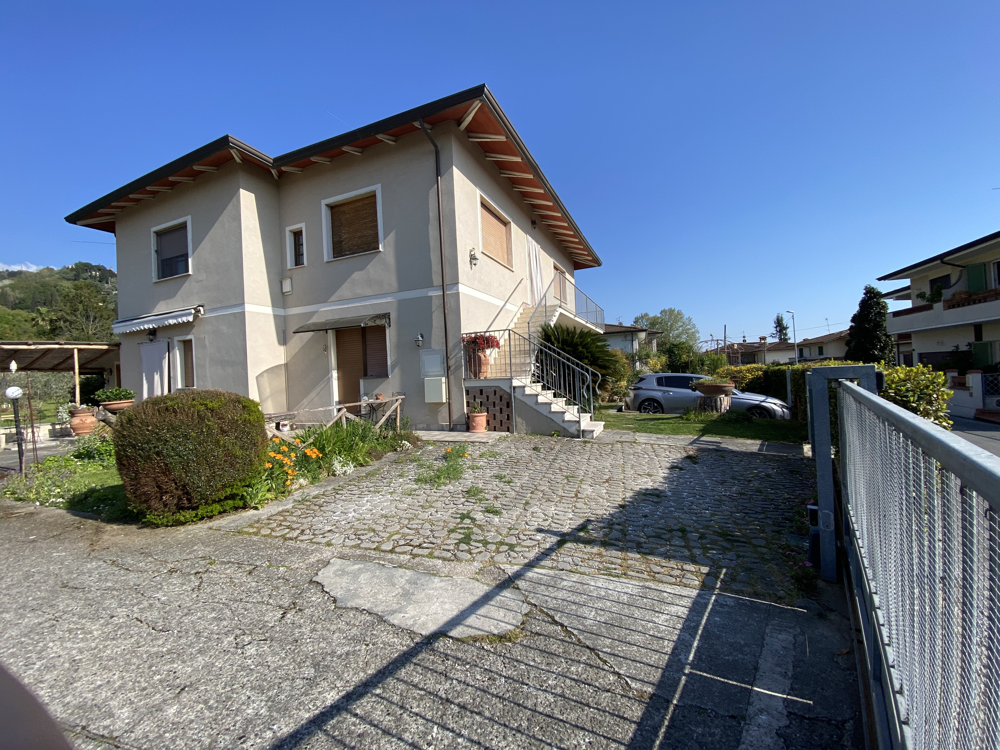
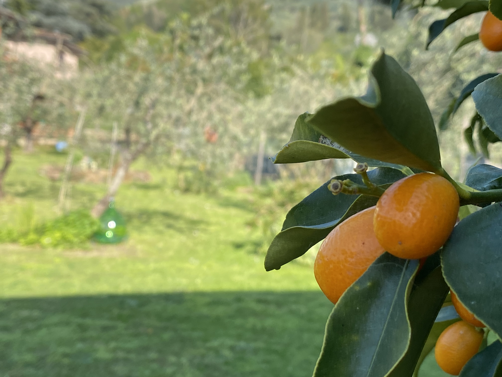
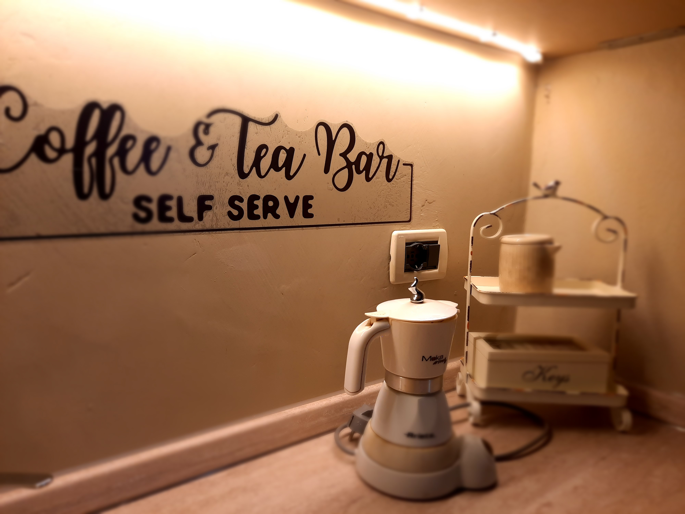
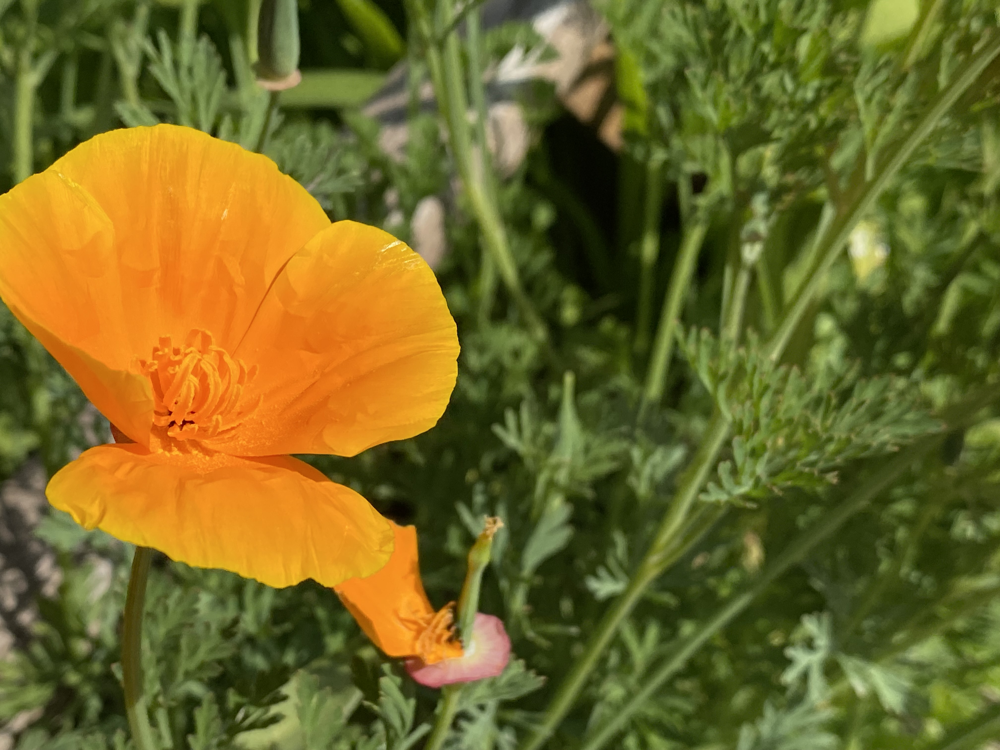

Casale nel verde
La homepage mette subito a fuoco il contesto, il carattere della casa e il tipo di esperienza proposta.
Ospitalita' in Versilia, gestione senza attrito
La parte pubblica presenta la struttura con un linguaggio piu' credibile e ordinato, mentre il backoffice concentra registrazione ospiti, pratiche ISTAT e tassa di soggiorno in un flusso semplice, adatto a un uso quotidiano.

Struttura
I contenuti restano quelli giusti: campagna, tranquillita', ospitalita', posizione comoda tra mare e borghi. La differenza sta nel modo in cui vengono presentati: piu' chiarezza, piu' ordine e una percezione generale piu' affidabile per chi deve prenotare.

La homepage mette subito a fuoco il contesto, il carattere della casa e il tipo di esperienza proposta.
Dotazioni e servizi possono essere letti in pochi secondi, senza appesantire la pagina.
La posizione viene tradotta in vantaggi concreti, non solo in elenco di luoghi vicini.
La parte amministrativa resta riservata e non interferisce con l'immagine pubblica del sito.
Camere

Atmosfera
Anche una fotografia di servizio, se ben inserita, aiuta a comunicare accoglienza, attenzione e tono della struttura. Questa logica poi si puo' estendere a camere, colazione, giardino e dettagli di ospitalita'.
Una scheda sintetica con elementi chiari: capienza, servizi, atmosfera e accesso rapido alla prenotazione.
La soluzione piu' ampia puo' essere distinta meglio per target, utilizzo e punti di forza.
Condizioni, pagamenti e dettagli pratici vengono organizzati in modo rassicurante e lineare.
Il collegamento al booking resta centrale, ma dentro un percorso piu' ordinato e convincente.
Gestore
La voce della proprietaria aggiunge autenticita' e posizionamento. Inserita bene, rafforza la relazione con l'ospite e rende il sito meno anonimo senza risultare informale.
Una presentazione misurata della host aumenta fiducia e riconoscibilita' del B&B.
I suggerimenti sul territorio possono diventare un contenuto utile e distintivo.
Recensioni, certificazioni e punteggi possono rafforzare la prova sociale in modo sobrio.
Zona

Pisa, Firenze, Viareggio e A12 possono essere letti a colpo d'occhio con distanze e tempi percepibili.
Mare, borghi e citta' d'arte possono essere raccontati come vantaggi di soggiorno, non come semplice elenco.
Trekking, cicloturismo, fuga romantica e soggiorni business possono essere tradotti in percorsi tematici.
CIN, indirizzo, contatti e indicazioni stradali possono essere esposti con maggiore ordine e autorevolezza.
Workflow amministrativo
Registri in pochi campi i dati dell'ospite e il periodo di permanenza.
Il sistema assegna uno stato alla pratica: da registrare, in verifica o completata.
La tassa di soggiorno viene proposta automaticamente in base ai dati inseriti.
Una dashboard mostra totali, ospiti attivi e importi da tenere sotto controllo.
Area amministrativa
Accesso locale con PIN demo. In questa versione i dati restano nel browser e servono per validare il flusso di lavoro.
Accesso
PIN iniziale: 1234